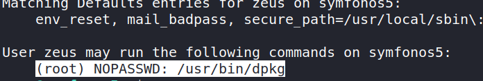

4.1 Connecting via SSH
We got “zeus” user credentials.
Username: zeus
Password: “cetkKf4wCuHC9FET”
a) Let's connect via SSH.
$ ssh zeus@192.168.12.8
b) Let's' see the “sudo” rights.
zeus@symfonos5:~$ sudo -l
Output:

Dpkg is package installer. We need to create a Debian package and transfer it to the victime machine so as to get a privilege shell.